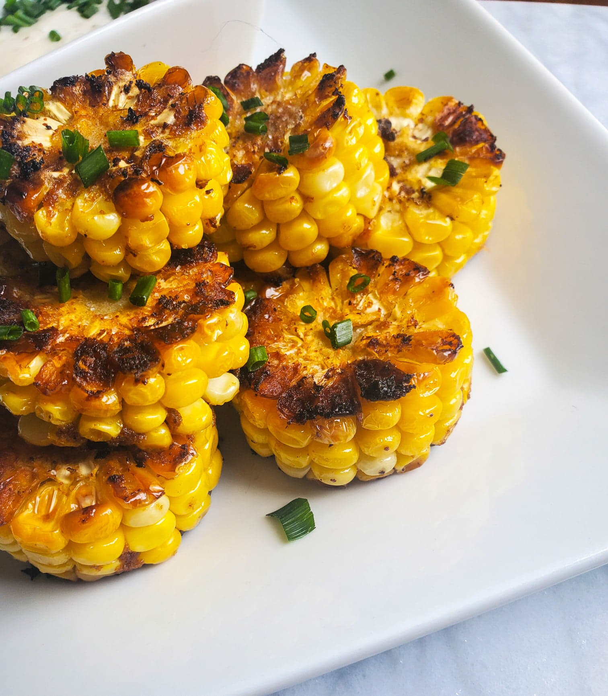

Corn Rings

Description
A simple yet delicious appetizer or side that makes eating corn on the cob a bit less messy.
By cuttin the corn in to slices it becomes easier to eat and also increases the amount of char
and flavor per bite for a mouth watering experience that will change the way you eat corn.
This vegetarian option is a perfect addition for non-meat eaters at your barbeque.
I would highly recommend pairing this with a mayonnaise based spicy dipping sauce to have
out on the side or to drizzle on top for even more flavor.
Ingredients
- 1/4 cup unsalted butter
- 1/2 tsp garlic powder
- 1/2 tsp onion powder
- 1/2 tsp chili powder
- 1/2 tsp Cajun seasoning
- 2 ears fresh corn, sliced into 6 equal-sized rings
- salt to taste
- 2 tsp chopped fresh chives, for garnish
- 1/4 cup ranch dressing, or to taste
Directions
- Preheat the oven to 400 degrees F (200 degrees C).
- Combine butter, chili powder, garlic powder, onion powder, and Cajun seasoning in a microwave-safe dish and cook in the microwave until butter is fully melted, about 1 minute. Remove from microwave and stir.
- Use tongs to dip a corn ring into the spiced butter, making sure to coat it thoroughly in the spices. Transfer to a plate and continue until all of the rings have been dipped. There will be butter remaining.
- Heat an oven-safe skillet over medium heat. Once heated, place corn rings into the skillet, season them individually with sea salt, and let them sizzle away until a nice sear has developed, about 3 minutes. Flip and use a basting brush to brush remaining butter onto the seared sides of the rings. Season again with salt and continue to cook for 2 more minutes.
- Transfer the skillet into the preheated oven and cook for 10 minutes. Carefully flip the rings and cook for 5 more minutes.
- Remove from the oven and transfer to a serving platter. Sprinkle chives over top and serve with ranch dressing, along with corn skewers for picking up individual rings.